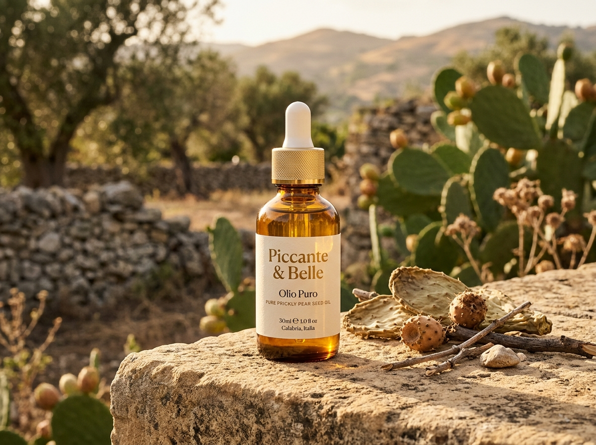

Flacon 30ml — Piccante & Belle
Domaine Agricole en Calabre • Magna Græcia
L'Or liquide de nos terres arides, directement du producteur à votre peau.
Pressée à froid sans aucun solvant à partir des graines de figuiers de barbarie sauvages du détroit de Messine. Une pureté microbiologique certifiée, née de la rencontre entre passion paysanne et recherche universitaire.

Récolte 2026 • Première Pression à Froid
Détroit de Messine, Calabre
Pureté microbiologique certifiée • Flacon en verre ambré
PHILOSOPHIE DU DOMAINE
C'est en observant les fruits abandonnés et inexploités au pied des falaises que la question du gaspillage s'est posée. Nous avons fait le vœu d'extraire la quintessence des graines les plus résistantes de Méditerranée.
Artisans Presseurs & Fondateurs
Piccante & Belle — Calabre
ANATOMIE DU FLACON D'EXCEPTION
L'Excellence du Flacon Artisanal, conçu pour protéger l'un des élixirs les plus rares au monde.
Chaque composant de notre flacon a été pensé pour stopper l'oxydation des 1 000 mg de vitamine E naturelle et garantir un dosage d'une précision chirurgicale.
Conservation & Dosage Expert
Cliquez sur les points pour explorer chaque composant
01 / APPLICATION DE HAUTE PRÉCISION
Pipette Compte-Gouttes en Laiton Brossé
Permet un dosage microscopique goutte par goutte : 1 goutte pour le contour des yeux, 3 gouttes pour le visage entier. Aucun gaspillage de cette précieuse essence.
02 / BOUCLIER LUMINEUX
Verre Ambré Anti-Photo-Oxydation
Bloque 99% du spectre UV néfaste afin de préserver intacts les 1000 mg/kg de tocophérols naturels pendant 24 mois sans aucun conservateur chimique.
03 / CŒUR D'ACTIFS PURS
Élixir d'Extraction Mécanique Pure
Obtenu par pression à froid sans solvants. Près de 1 million de graines sélectionnées à la main sont nécessaires pour donner naissance à un seul litre de ce précieux nectar.
LE VOYAGE DE L'ÉLIXIR
4 Étapes d'Exception, du champ calabrais au flacon scellé.
01 / 04
LES 5 POUVOIRS DE L'ÉLIXIR
Une concentration botanique sans équivalent dans le monde végétal.
Analyse des 5 principes actifs majeurs identifiés dans notre huile par nos partenaires biologistes universitaires.
ACTION CELLULAIRE MAJEURE
VITAMINE E & STÉROLS
Anti-Âge, Élasticité & Fermeté Cutanée
Grâce à sa richesse hors norme en tocophérols et en stérols, elle stimule les fibroblastes, affine le grain de peau, unifie le teint et atténue visiblement ridules, taches pigmentaires et cernes marqués.
1 000 mg
De Vitamine E par kilo
3×
Plus riche que l'Argan
100%
Assimilation cutanée
RÉPARATION
ACIDES GRAS
Cicatrisante & Réparatrice
Gomme les cicatrices superficielles, atténue les marques d'acné et resserre les pores dilatés sans obstruer la respiration des tissus.
RENOUVELLEMENT
OMÉGA 6
Régénérante & Séborégulatrice
L'acide linoléique stimule le renouvellement cellulaire tout en normalisant le film sébacé. Idéale pour fortifier les cheveux dévitalisés et ongles cassants.
HYDRATATION
ACIDE PALMITIQUE
Hydratation Profonde & Souplesse
Restaure la barrière lipidique intracellulaire. Protège durablement contre la perte insensible en eau tout en laissant un fini doux et non gras.
PROTECTION
BOUCLIER RADICAUX
Bouclier Antioxydant
Neutralise les effets délétères du stress oxydatif, des rayonnements ultraviolets et de la pollution atmosphérique quotidienne.
TRANSFORMATION CUTANÉE EN 14 JOURS
Glissez pour Comparer les Résultats sur le grain de peau et l'éclat du teint.
Déplacez le curseur interactif de gauche à droite pour observer la réparation du film hydrolipidique et le lissage du relief épidermique.
APRÈS 14 JOURS (LISSÉE & ÉCLATANTE)
◀ ▶
MODE D'EMPLOI & GESTUELLE
Le Rituel d'Application Quotidien pour tout type de peau, même sensible.
Une huile sèche et légère qui pénètre instantanément. Choisissez votre zone d'application pour découvrir le dosage et le protocole expert.
RITUEL QUOTIDIEN MATIN & SOIR
Application Visage et Cou
Appliquer quelques gouttes matin et soir sur une peau préalablement nettoyée. Chauffer l'huile entre les paumes de vos mains avant de masser délicatement le visage et le cou avec des mouvements ascendants.
1
Chauffer 2 à 3 gouttes au creux des mains tièdes pour libérer les acides gras.
2
Lisser du centre du visage vers l'extérieur jusqu'aux tempes.
3
Remonter sur le cou et le décolleté avec la pulpe des doigts.
L'ÉDITION DIRECT DOMAINE
Commander l'Huile Pure de Graines en direct de notre atelier en Calabre.
Flacon en verre ambré protecteur anti-UV avec compte-gouttes doseur en laiton. Récolte fraîche conditionnée à la demande.
RÉCOLTE 2026
Direct Producteur
PICCANTE & BELLE — CALABRIA
Olio Puro di Fico d'India
Huile vierge pure de graines de figues de barbarie, première pression à froid mécanique sans solvant.
54,00 €
TTC • Expédition sous 24h
En stock au domaine
1
Circuit Court Direct : Sans intermédiaire, pureté intacte.
Conservation Prolongée : Flacon verre opaque anti-UV avec compte-gouttes.
Garantie Sérénité 30 Jours : Satisfait ou intégralement remboursé.
QUESTIONS FRÉQUENTES
Tout ce que vous devez savoir sur l'huile de graines de figues de barbarie.
Les minuscules graines contenues dans les figues de barbarie ne recèlent qu'environ 5% d'huile. Il faut près d'une tonne de fruits (soit environ 30 à 50 kg de graines triées) pour extraire un seul litre d'huile par pression mécanique à froid. Sa teneur en vitamine E naturelle (1 000 mg/kg) surpasse toutes les autres huiles végétales cosmétiques.
Parfaitement. Son indice de comédogénicité est strictement de 0 (non comédogène). Riche à plus de 60% en acide linoléique (oméga-6), elle régule la viscosité naturelle du sébum sans obstruer les pores, tout en accélérant la résorption des marques résiduelles d'acné.
Le macérât huileux est une simple infusion de fleurs ou de morceaux de fruits dans une huile neutre bon marché (comme le tournesol). L'huile de Piccante & Belle est 100% pure pression mécanique directe des graines, sans coupage, sans solvant chimique, délivrant la totalité des principes actifs natifs.
Grâce à nos protocoles de laboratoire avec des chercheurs universitaires et à notre procédé d'extraction sans oxydation, l'huile est microbiologiquement pure. Elle conserve l'intégralité de ses vertus pendant 24 mois dans son flacon de verre ambré à température ambiante.